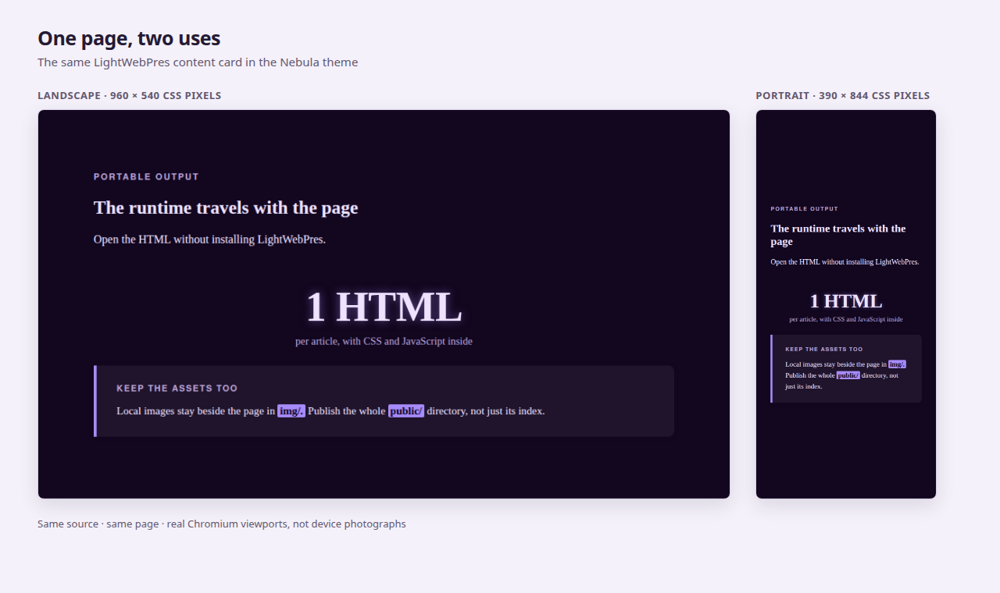

LightWebPres turns structured Markdown articles into navigable, themeable HTML presentations.
Source code and project: GitHub
LightWebPres is distributed under the GNU General Public License version 3 or later, with the LightWebPres Output Exception, version 1.0. This exception allows generated presentations to be published under terms of your choice.
The primary theme is selected by default.
One Markdown source for reading and presenting. Start with this overview, then use the complete operational manual below.
Each article is an HTML file with its CSS and JavaScript inside. The build also derives a series index and navigation. Publish public/, including referenced images and Identity Kit assets, to a static host.
Readers need a browser, not Python or LightWebPres. The source remains plain text; the manual describes how to operate the tool, not an editorial method.
Source : Guide, chapters 1 and 7
Run python3 lightwebpres init my-series, then python3 lightwebpres demo my-series --lang en. Demo already builds. Open my-series/public/index.html.
Next, create sources/first-page.md, register its filename in series.json and run build --lang en --open. The manual supplies the complete source and JSON, followed by audit and verify. No extra build belongs before that edit.
Source : Guide, chapters 1 and 2
A cover supplies the title. A standard slide accepts text, images, tables, notes and optional named components. A series-nav slide generates links; a full-article slide includes a separate plain Markdown file.
Every slide declares its stable slug:. Fields occupy one physical line, except indented continuations of note: and comment:. Once free text starts, later field-looking lines are text too.1
lightwebpres contract exposes accepted fields and parseable skeletons. note: is public HTML for the speaker panel; comment: is source-only. Footnotes such as this one are reader-visible references, not speaker notes.↩Source : Guide, chapter 3
The articles array in series.json fixes the index and navigation order. Only page_source is required per entry. status shows resolved metadata; series tags reports effective article and slide visibility without building.
Article tags gate the article, slide tags gate its content. Untagged slides are shared with non-default selections. L opens the reader's tag menu; excluded removes a slide at build time. Tags are not access control.
Source : Guide, chapter 4
A self-contained Identity Kit supplies layouts, chrome, assets and typed themes. LWP keeps the page shell, navigation and script. Select a preset through series_meta.presentation_preset: builtin/standard, commons/id, or id@version/preset. Omission selects native Standard with minimal Light; Commons presets bind global themes to native layouts. Identity is inferred from the reference, and its label stays fixed when the selection changes.
Keep alternatives at the root of series.json with presentation_presets, or pass --presentation-presets to build, verify or watch. A kit or Commons primary also adds compatible builtin/standard after those choices; a kit-only slide layout or chrome override makes that implicit candidate unavailable and is reported as a warning. The primary stays first; C opens Identity, Preset and Theme choices and switches the whole deck without changing its sources. The session choice is scoped to that deck as well as its catalogue. Applicable / Current identity / All filter published choices by typed compatibility or ownership, not brand. Follow preset resets an explicit runtime theme choice.
Use preset list, preset show and series preset set to inspect or change the choice. init --preset can also apply the kit's starter. kit compose builds an autonomous kit from explicit files and a complete final manifest. Per-slide slide-layout, slide-header and slide-footer override defaults.
Source : Guide, chapter 5
A theme sets the base. settings.conf pins values for the series; style.* metadata changes one page; instance tags change one phrase. The compiler checks typed property names and values. custom.css adds unrestricted rules after the composed stylesheet.
resolve explains a surprising value, including the levels that lost. series theme measures the effective typed colors; it does not certify arbitrary custom CSS or repair a palette.
Source : Guide, chapter 5
C opens the theme picker. Monochrome, Monochrome Night and Print Ink ship by default; --no-essential-theme opts out. Select Print Ink before printing when you want black on white: printing keeps the active theme.
M opens the presenter menu, F requests fullscreen, H lists the controls and S shares a link or QR code. A projected screen also shows an open speaker panel: N is not a private presenter window.
Source : Guide, chapters 5 and 8
The CLI runs unattended with Python's standard library. watch rebuilds on edits; --only targets an article when the navigation cache is safe. Language packs separate interface strings from build-time typography.
The browser builder runs the same executable under Pyodide: upload a series zip, or pull/build/push with GitLab. Serve the builder over HTTP(S). Sanitize untrusted input upstream: raw HTML is passed through by the engine.
Source : Guide, chapters 6, 9 and 10
audit renders in memory and reports source and style warnings without writing output. Plain audit exits zero; --strict turns warnings into a gate. verify compares a fresh in-memory render with the files on disk and fails on drift. Use the same supported rendering options as the build.
Inspect the rendered page before publishing. Verify cannot reproduce --inline-images. Removing an article does not delete an old hosted file; review clean locally and the host's stale files separately.
Source : Guide, chapter 7
The operational manual for LightWebPres: create a series, add your content, configure its presentation, check the output and publish it. It covers the terminal and browser tools, not editorial craft. For exact parser rules use the format reference; for normative contracts use specifications.md (French).
Follow the README quickstart to acquire the single executable and run init then demo. You need Python 3.8+ with its standard library, no additional packages. demo already builds the site; do not run build again until you change something. Open my-series/public/index.html.
Commands in this guide run from the directory containing lightwebpres and my-series/. On Windows, use python lightwebpres (or py lightwebpres). Examples using ./lightwebpres assume Unix and chmod +x lightwebpres; python3 lightwebpres works without the executable bit.
init scaffolds a working project — sources/ (empty, for your .md files), templates/ (your customization surface: settings.conf and custom.css, plus optional versioned themes/*.conf, see section 5), empty interface/, typography/ and legacy language/ directories, an empty public/ for the build to write into, a starter series.json, and a copy of the lightwebpres executable itself with its COPYING and COPYING.EXCEPTION beside it, so the project directory is self-sufficient and the copy travels with its licence.
The navigation script and built-in language packs stay inside the executable so upgrades reach the series without refreshing local copies. For deliberate overrides, use template show/template write (section 10). init --preset can also install an Identity Kit and its declared starter (section 5).
The quickstart uses --lang en explicitly. Without it or LWP_LANG, the browser chooses the interface language; typography is already fixed at build time. Section 6 explains the two layers and custom packs.
demo only works after init and refuses to overwrite existing work. It drops three example articles (first, middle and last position in the navigation) plus a captioned image, so you have something real to look at before writing your own.
With demo --dry-run, the files and build are only journaled as a plan; the existing on-disk series is not built in place of the planned demo.
build reads series.json and every article it lists, and writes public/*.html plus public/index.html. A generated README.md lands beside series.json, at the root of the series rather than in public/ — it describes the series to whoever opens the repository, not to whoever visits the site. Open the index locally; no server is needed. Referenced images are separate assets by default. The publication chapter covers single-file delivery, output switches and cleanup; start by adding your own article below.
Keep the demo as a reference and add one article beside it. The following small example describes the output files, so it needs no external image or second Markdown file. Its tracked source also produces this manual's captures: examples/first-article/sources/first-page.md.
Create my-series/sources/first-page.md in your editor with this content:
<!-- lwp:meta -->
page_title: My first page
---
<!-- lwp:slide:cover -->
slug: first-page
kicker: Getting started
# My first page
summary: A small site I can read, present and share.
---
<!-- lwp:slide -->
slug: travels-with-the-page
kicker: Portable output
## The runtime travels with the page
summary: Open the HTML without installing LightWebPres.
highlight: 1 HTML
highlight-caption: per article, with CSS and JavaScript inside
fact-label: Keep the assets too
Local images stay beside the page in **img/**.
Publish the whole **public/** directory, not just its index.
---
<!-- lwp:slide:series-nav -->
slug: explore-the-series
Open my-series/series.json. Append this object to its existing articles array, adding a comma after the preceding object:
{"page_source": "first-page.md"}
Keep the demo entries and series_meta; do not replace the whole file with that one object. Only a bare filename belongs in page_source, not sources/first-page.md. The array order is the index and navigation order.
For a series containing only your article, this is a complete alternative series.json (the unused demo sources can stay on disk):
{
"series_meta": {"title": "My first series"},
"articles": [{"page_source": "first-page.md"}]
}
python3 lightwebpres build my-series --lang en --open
python3 lightwebpres audit my-series --lang en
python3 lightwebpres verify my-series --lang en
If automatic opening is unavailable, open my-series/public/index.html manually, then select My first page. Its direct file is my-series/public/first-page.html; the content card is first-page.html#travels-with-the-page. Check the title, the content card and the links to the demo articles. audit reports warnings; read them even when its exit code is zero. verify should report no drift after this build.
Edit the title or body and repeat this loop. Keep each published slug: stable: changing a title does not change its address. Once you no longer want the demo in the site, remove its entries from articles, build again, then review clean before removing old output (section 7).
The same content card, built with the nebula theme, in two browser viewports. This is a Chromium comparison, not a photograph of a device:

A page is a sequence of slides, separated by ---, preceded by one metadata block. There are four slide types, and inside a standard slide a small set of named components. This section names them and says how you reach each one; agent/skills/lightwebpres/SKILL.md carries the exact syntax and every edge case.
The four slide types.
| Type | Carries | How many |
|---|---|---|
cover |
slug, kicker, tags:, # Title, summary, slide-layout, slide-header, slide-footer, comment, note |
any number, anywhere — it is a look, not a structural marker |
| standard (the default) | slug, kicker, tags:, ## Title, summary, highlight, highlight-caption, fact-label, fact-variant, source, slide-layout, slide-header, slide-footer, comment, note, then free Markdown |
as many as you want |
series-nav |
slug, tags:, slide-layout, slide-header, slide-footer, comment: — the navigation itself is generated from series.json |
0 or 1 per article |
full-article |
slug, article: filename.md, tags:, slide-layout, slide-header, slide-footer and comment: |
any number, each with its own file |
Four, and only four. Mistype one — <!-- lwp:slide:covre --> — and the build stops and tells you which slide, what you wrote, and what the four names are. You will not find out from the page.
The components inside a standard slide.
| Component | What it is for | How you reach it |
|---|---|---|
| fact box | the slide's claim, set off from the page | free Markdown text after a fact-label: line |
| key figure | one number that carries the slide | highlight: (+ optional highlight-caption:) |
| source | where the claim comes from | source: |
| comparison table | a grid of verdicts read at a glance | a Markdown table; cells take yes / no / partial classes via inline HTML |
| figure | a captioned image |  alone on its line; add {50%} for general image zoom or {width=50% align=right} for the extended format |
| headings | structure within the fact-box body | # ## ### #### ##### ###### — up to level 6; #–### are true headings, #### renders as a bold-font paragraph (not <strong> emphasis), #####/###### as plain paragraphs |
| quote, code, list | ordinary prose furniture | ordinary Markdown |
| note | a reference the reader can reach | [^label] in the text, [^label]: body on its own line |
| long-form article | the piece the cards summarise | a full-article slide pointing at a second .md file |
Keep these parser boundaries in mind:
{50%} after the image for general image zoom, or use validated pairs such as {width=50% height=auto align=right}. width and height accept safe CSS lengths; zoom accepts a percentage; align is for standalone figures. An inline image can use the size values but not align.field: line, everything after it is prose — so a highlight: placed after a paragraph is published as the literal text highlight: 3 000 W. Fields first, prose after.note: and comment:: an indented continuation line belongs to the preceding note/review field.summary: un **gras** publishes the asterisks. The border is not where you would guess, either: a field passes raw HTML straight through, so finding that <br> works there says nothing about **. audit names fields carrying Markdown markup that they will not render.fact-label:. Free text without it renders as plain paragraphs — which is often what you want.Notes. [^label] calls a note, [^label]: text on its own line is its body. The label is a key, and a valid one is never displayed — the reader sees a position — so you never renumber when you insert one. Valid means word characters only: letters, digits and _, accents and non-Latin scripts included, but no -, no space, no punctuation. A label outside that is neither a note nor an error: the call ships as literal text, the body renders as an ordinary paragraph, and the label is the one thing on the page the reader was never meant to see. By default a body lands at the foot of the unit that called it (the card, or the end of the long-form article) and numbering restarts in each card, because a card is shareable on its own and a reader may arrive at it having read nothing else. notes_placement: page in the meta block instead collects every body into one notes section at the end of the page; notes_tooltip: on additionally puts the text on the call. audit names a label outside the pattern, a call with no body, a body nothing calls, and a body written inside a raw HTML block (where it ships as literal text).
Both note settings can be set in series_meta; article metadata wins over that series default. The built-in defaults are notes_placement: local and notes_tooltip: off. Calls and note bodies link in both directions.
What a card's link is. Every card has its own address — article.html#barrage-de-vajont — and the share button in the corner copies it, or shows it as a QR code you can point a phone at or print. The share action is on the index too, where slide scope is disabled: there is no slide to share, and the series scope already names the page you are on. That address is the slug: line you write on the card, and nothing else: it is not the card's position and not its title, so you can reorder the deck, insert a card, rewrite a heading, or drop a card with tags: excluded, and the links you have already given out still land where they did.
slug: is required. A card without one stops the build, which names the command that fixes it in one pass: lightwebpres series slug set writes a slug into every card that has none. It is the only command that edits your articles — a build never rewrites its own inputs — and what it writes is a random eight-character name, because a name derived from the title would look as though it still followed the title. Rename it to something readable before you publish: slug: barrage-de-vajont is worth more than slug: 3f7c1a9e, and the value is the identity from then on.
Two cards on one slug is a build error, not a -2 appended in silence. slug_prefix: in the meta block (or in series_meta) puts a namespace in front of every address on the page, which is what a series whose pages reuse card names (intro, sources) needs.
lightwebpres series slug lists every card of the series and the name it is published under, without building anything.
Register every article that should appear in navigation in series.json — next section.
comment: is a source-only review field, accepted on every slide and in article/series metadata. It is never published, not even in the HTML source. note: is different: on a cover or standard slide it is embedded in the HTML for the speaker panel (section 8). Both support indented continuation lines.
For editor or agent integrations, lightwebpres contract --format text describes the versioned lightwebpres.slide-draft/1 contract: accepted and required fields, cardinalities, source order, empty-value rules, reserved IDs and parseable skeletons. JSON is the default. --article first-page.md avoids slugs already declared in that source. It writes nothing.
A full-article slide needs article: filename.md, pointing to a separate plain Markdown file under sources/, with no LWP metadata or slide markers. Omitting article: is fatal; an explicitly empty article: warns and omits that unfinished slide. A non-empty reference to a missing file is fatal.
Markdown supports lists, tables, blockquotes, inline/fenced code and raw HTML. A linked standalone image, [](https://example.org), keeps its caption outside the link; a mid-sentence image stays inline and its title is a tooltip. Relative Markdown links are not converted: use raw <a href="other.html">Other page</a> for local links. Headings at levels 4-6 render as paragraphs, not semantic headings. See the format reference for converter limits; this is not a general CommonMark implementation.
For comparison tables, wrap a cell value in <span class="yes">Yes</span>, no or partial to add a verdict treatment with a shape marker, not color alone. A col-signal class on a header emphasizes its column; that requires a raw HTML table because Markdown cannot attach a class to a header cell.
tags: is a slide header field, not an instance styling tag. Its value is a space-separated list of case-insensitive variant names. Unicode letters, digits, -, and _ are allowed, except that a name cannot start with _. The field is one physical line, like every structural field.
tags: (or an empty value) means default, the shared content.tags: excluded removes the slide during the build; it is never emitted.data-tags attribute and filtered in the browser.localStorage['lwp-active-tag'].default slides; counts, navigation, anchors, and the presenter panel use the visible slides.tag: is not a field, and not an alias for one. Use kicker: for the label above a slide title, and tags: for variant filtering. A tag: line becomes body text on a standard slide; on a cover, build reports the unknown field and prints the two choices.
For language-specific typography, map tags to packs in series_meta:
{
"series_meta": {
"lang_tags": {"fr": "fr", "en": "en"}
},
"articles": [{"page_source": "guide.md"}]
}
The first mapped language tag on a slide selects its typography pack. A slide without a mapped language tag uses the build's --lang/LWP_LANG fallback. The built-in fr and en packs come from the executable; another pack name refers to typography/<name>.json, or to the legacy language/<name>.json, in your series. The browser locale does not change this typography choice. audit reports invalid tags and missing packs without blocking, while build rejects malformed declarations.
series.json lists the articles and holds series-wide metadata:
{
"series_meta": {
"title": "My article series",
"subtitle": "Series subtitle",
"intro": "Series introduction.",
"scroll_duration": 200,
"lang_tags": {"fr": "fr", "en": "en"}
},
"themes": ["essential", "family:terrain"],
"articles": [
{"page_source": "apple-pie.md"}
]
}
page_source — a bare filename, no path — is the only field ever required here. Each article is self-described: page_dest (the output HTML name), page_title/page_desc, card_title/card_desc/ card_label, nav_title/nav_desc, and the editorial fields (author/license, defaulting series-wide from series_meta, and date) all resolve from the article's own meta block and cover slide, and any of them can be overridden per entry here when you want series.json to have the final say. status says what each article is worth to the series: active (the default), draft — still an article of the series, kept out of the output until --include-drafts previews it with a banner — or ignored, which takes it out of the chain entirely without deleting the entry and everything you configured on it. The array order is the navigation and index order. The full fallback chain per field is in GLOSSARY.md.
lightwebpres status my-series --format json also carries the tag inventory used by the build. For the focused view, use lightwebpres series tags my-series: it reports effective article and slide visibility by tag, separates active, draft, and ignored, and shows what the default selection will actually publish. Add --tag fr to keep one row.
status lists articles in array order, each resolved value and where it came from: JSON entry, article metadata, content, derived field or built-in default. An unreadable source remains listed with fallback values and a stderr warning. Neither status nor series tags builds or writes anything.
Article metadata can also declare tags: fr: that gate must match the selected tag and at least one non-excluded slide must accept it. Untagged articles have no article gate. series_meta.default_tag sets the initial selection (default: default); a valid saved reader choice wins. Selecting default shows only shared slides, not every variant. build and audit warn if a selectable tag has no effective slide, or an article has no non-excluded slide. Use series tags --format json for status totals, shared slides and default output; --tag fr narrows the tag rows without changing series totals.
Identity groups presentation choices. The native identity, LightWebPres, provides builtin/standard and the minimal Light theme. Commons contains the global theme catalogue and presets that bind those themes to native layouts. An Identity Kit is a self-contained versioned collection of layouts, headers, footers, assets, typed themes and constrained structural CSS. Preset selects a layout/chrome configuration and a base Theme; it does not generate every possible combination of those resources.
LWP owns the page shell, navigation and JavaScript. Kit fragments have {{content}}, {{slide_header}} and {{slide_footer}} slots; the index receives only {{content}}. A kit can use local files or native references builtin:standard for layouts and builtin:light for themes. A native layout inside a kit keeps that kit's chrome. Kits cannot depend on Commons or other kits, extend them, or declare provenance, parentage or authenticity. Resource origins are computed by the loaders.
The only persisted selection is series_meta.presentation_preset: builtin/standard, commons/<id> or id@MAJOR.MINOR.PATCH/preset. The identity is inferred from this reference. The selection belongs neither in article metadata nor in an articles[] entry. Omission selects builtin/standard implicitly. init --preset builtin/standard and series preset set --preset builtin/standard persist that explicit reference; plain init leaves the field absent. Neither native choice vendors resources.
{
"series_meta": {
"presentation_preset": "corporate@1.0.0/brief"
}
}
The kit manifest's label names the identity, not whichever preset happens to be initial. Its optional default_preset names a local preset, otherwise the first preset in manifest order is used. slide_layouts and slide_chrome declare preset defaults in that manifest only.
slide-layout, slide-header and slide-footer work on all four slide types. They override the selected preset's defaults for one slide, not through an author JSON cascade. The preset's theme supplies the typed base unless settings.conf explicitly selects another theme. Precedence is: base theme < settings.conf pins < article style.* < instance styles; templates/custom.css remains the final advanced CSS layer. Assets are published under public/assets/presentations/<id>/<version>/..., or embedded by --inline-images.
./lightwebpres preset list
./lightwebpres preset show builtin/standard
./lightwebpres series preset my-series
./lightwebpres series preset set my-series --preset builtin/standard --use-preset-theme
./lightwebpres init my-series --preset builtin/standard
series preset set vendors and selects without applying a starter. It preserves pins and custom.css; with an explicit theme: in settings.conf, it requires --keep-theme or --use-preset-theme, which removes that line. --keep-theme requires an explicit theme:. Kits live under kits/<id>/<version>/ in a catalogue and templates/kits/<id>/<version>/ once vendored. LWP_IDENTITY_KITS_DIR replaces the user catalogue location; an id/version collision shadows the entire kit. See specifications.md §9.9 for manifest, validation and security details.
For a kit preset, init --preset validates and vendors the complete kit, writes the selector and generates settings from its theme. It applies the declared starter unless --no-starter is passed. Neither option changes the meaning of the template commands. Choose an installed selector from preset list; corporate@1.0.0/brief is illustrative, not a supplied kit. Native selection needs no files. Both init and series preset set vendor a Commons descriptor and its selected external theme snapshot, if any; a native or embedded theme needs no snapshot copy. An identical local dependency is reused, while a conflicting file is refused.
The guide itself uses the tracked kit examples/kits/lightwebpres-docs/0.1.0/. tools/build_guide.py vendors it into a temporary series and publishes its assets with the guide. It is an inspectable kit example, not another source of this manual.
Commons themes use the global themes/ catalogue, LWP_THEMES_DIR and a series' templates/themes/. Preset descriptors use a separate Commons root: installed commons/presets/ beside the executable or below <prefix>/share/lightwebpres/, then the user root LWP_COMMONS_DIR, then templates/commons/presets/ in the series. User defaults are $XDG_DATA_HOME/lightwebpres/commons/ (normally under ~/.local/share) or %APPDATA%/lightwebpres/commons/. A nearer descriptor replaces the whole entry.
For example, templates/commons/presets/reading.json contains:
{
"schema": "lightwebpres.commons-preset/1",
"id": "reading",
"label": "Reading",
"description": "Native layouts with a light reading theme.",
"theme": "builtin:light"
}
All five keys are required; no other key is accepted, including starters. The id matches the filename; theme is a global theme slug or builtin:light. Select it with ./lightwebpres series preset set my-series --preset commons/reading. If the series has an explicit theme, also choose --keep-theme or --use-preset-theme.
kit compose builds an autonomous kit from an explicit recipe. This complete recipe.json needs no source files:
{
"schema": "lightwebpres.kit-composition/1",
"sources": {},
"manifest": {
"schema": "lightwebpres.identity-kit/1",
"id": "brief",
"version": "1.0.0",
"label": "Brief",
"default_preset": "reading",
"layouts": {
"cover": {"default": "builtin:standard"},
"standard": {"default": "builtin:standard"},
"series-nav": {"default": "builtin:standard"},
"full-article": {"default": "builtin:standard"},
"index": "builtin:standard"
},
"themes": {"light": "builtin:light"},
"structure_css": "structure.css",
"presets": {
"reading": {
"label": "Reading",
"description": "Native layouts with a fixed editorial footer.",
"theme": "light",
"slide_layouts": {
"cover": "default",
"standard": "default",
"series-nav": "default",
"full-article": "default"
},
"slide_chrome": {"all": {"footer": "Brief"}}
}
}
},
"files": {
"structure.css": {"text": ".lwp-presentation--brief { gap: 1rem; }\n"}
}
}
./lightwebpres kit compose recipe.json --output kits --dry-run
./lightwebpres kit compose recipe.json --output kits
LWP_IDENTITY_KITS_DIR="$PWD/kits" ./lightwebpres init my-brief --preset brief@1.0.0/reading
The result is kits/brief/1.0.0/. The recipe requires exactly schema, sources, manifest and files. To reuse declared source files, sources maps an alias to a relative kit path contained below the recipe directory; files maps a destination to {"source":"alias","path":"local/path"}, {"file":"local/path"} or {"text":"content"}. A .css destination also accepts {"parts":[...]} with a non-empty list of those descriptors; files read by parts must also have a .css extension. A source kit's declared structure_css file is recognized by its manifest role regardless of suffix. Only matching class tokens in its selectors are rebound to the target kit's scope, including escaped tokens; comments, strings, attribute values and declarations are preserved. Other copied files are not rebound. The full final manifest must name all final local references explicitly: there is no guessed remapping or dependency closure.
Publication is staged outside the output catalogue on the same filesystem; --dry-run validates in disposable system temporary storage and creates no output. An output catalogue at a filesystem or mount root is refused: choose a subdirectory within that filesystem. Existing kit destinations are refused. The composed kit needs no source kit at build time and carries no provenance record.
A series has one primary presentation, but a build can carry other named presets for the reader to choose without rebuilding. A kit or Commons primary also makes the compatible native builtin/standard available automatically, after the declared alternatives. Put other alternatives at the root of series.json, or pass them for one build:
{
"series_meta": {
"presentation_preset": "lightwebpres-docs@0.1.0/docs"
},
"presentation_presets": [
"builtin/standard"
]
}
./lightwebpres build my-series --presentation-presets builtin/standard
The primary preset is always emitted first and remains the no-JavaScript fallback. The CLI list overrides the JSON list; it adds alternatives rather than replacing the primary. Duplicate selectors are removed, and an unknown selector fails before output is written. The preset must be available in the effective catalogue. Listing builtin/standard explicitly is optional for a kit or Commons preset. If a slide uses a kit-only slide-layout, slide-header or slide-footer, the implicit default is omitted with a warning; explicitly requesting builtin/standard keeps the normal validation error.
When alternatives exist, C opens the Appearance picker with Identity, Preset and Theme controls. The selected preset changes the whole deck, including the index, and lasts across pages in the current browser session. It does not edit the series. If settings.conf names an explicit theme:, that theme remains fixed; otherwise the preset's typed theme follows the selected presentation until the reader chooses an explicit theme. Follow preset resets that explicit runtime choice. All themes of every selected kit are published under kit-qualified names, even if no selected preset uses them.
The Applicable, Current identity and All filters only narrow published choices. Applicable means typed compatibility, not brand matching; Current identity means resource ownership. Identity labels stay fixed when the preset or theme changes. The initial/default marker describes a selection, not another identity. The picker does not invent a cross-product of presets and themes or fetch additional catalogue entries.
For color and typography changes, choose the smallest value override that does the job before adding CSS rules.
Dozens of colour themes are preconfigured — too many to pick from a list, so you find one by facet: which family it belongs to, whether its background is light or dark, and what hue that background carries.
./lightwebpres theme list # the whole catalogue, with facets
./lightwebpres theme list --family terrain # one editorial family
./lightwebpres theme list --polarity dark --hue green # just the ones you mean
./lightwebpres theme gallery # every theme, rendered
The Commons theme catalogue combines the embedded themes with complete UTF-8 .conf snapshots from the installed and user roots; a series can add its own templates/themes/ snapshots on top. LWP_THEMES_DIR replaces the user root. The order is embedded, installed, user, series, and a collision replaces the whole lower entry rather than inheriting it. Use builtin:<slug> to select an embedded theme hidden by a local file.
Installed themes live under <prefix>/share/lightwebpres/themes/ for FHS installations, or a sibling themes/ beside a standalone executable. The user root is $XDG_DATA_HOME/lightwebpres/themes/ on Unix (normally under ~/.local/share) or %APPDATA%/lightwebpres/themes/ on Windows. Only direct .conf files are loaded. theme path reports the roots. Global theme reports do not include a series' vendored layer; series theme does.
Apply one at init time, or change your mind later:
./lightwebpres init my-series --theme evergreen
./lightwebpres series theme set my-series --theme crimson
A theme is a word in a data file: series theme set rewrites the one theme: line of templates/settings.conf and nothing else. No CSS is touched — the stylesheet is composed in memory at every build.
By default, the build embeds the essential runtime theme bundle for the reader; --no-essential-theme opts out, while explicit selections add to or shape the catalogue:
./lightwebpres build my-series --lang en --themes print-ink,print-grey
./lightwebpres build my-series --lang en --themes all
Or keep the selection in the root of series.json:
"themes": ["essential", "background:light", "bgh:red"]
essential embeds Monochrome, Monochrome Night and Print Ink. A selector X:Y can use background/bg, family/fam, or background hue/bgh; each selector adds its matching themes and duplicates are removed. An explicit CLI --themes overrides the JSON list.
Create or make a theme portable explicitly:
./lightwebpres theme create my-theme --from evergreen
./lightwebpres theme migrate my-series
./lightwebpres theme vendor my-series --themes my-theme,evergreen
./lightwebpres theme path
theme create writes a complete editable snapshot, theme migrate keeps only the selected theme and explicit pins in an old scaffold, and theme vendor copies complete snapshots into the series. No theme file uses extends.
The effective theme in templates/settings.conf is always included as the first base choice, even if it is not in the list. When that file has property pins, the first runtime choice is named custom(<theme>) and the raw base theme is also present; those settings pins apply only to the custom choice. The setting is read at build time, so an author's edit remains the source of truth. style.* page properties and theme variables declared in custom.css are left alone while a reader switches. C opens the searchable Appearance picker when the build carries presentation or theme alternatives, and otherwise has nothing to open. M opens the global presenter menu; the same menu is available from the bottom-right navigation button. The selection lasts for the other pages of the same deck in the current browser session. The session key includes the deck identity and catalogue digest, so another deck on the same origin or a changed local snapshot cannot reuse an old choice. Each theme choice previews its resolved background, including its gradient, with matching foreground ink. The menu actions carry icons and their keyboard shortcuts, including I on Scroll. In the theme picker and that presenter menu, focus starts at the first useful control. In the presenter menu, left/right stay on the current row while up/down move to the nearest control on the adjacent rendered row. Tab, Home and End still move through the controls, and Enter/Space activate the focused one.
These commands inspect and select existing theme values. They do not design, retune or repair a palette. Use theme show to read the measured contrast of the shipped theme, or of the effective theme after the series' pins. audit reads the same resolved sheet without being asked, and speaks only when something has stopped working — a navigation control you cannot see, text the colour of its own ground, a size under the readability floor. It warns; it never refuses, and no shipped theme trips it.
./lightwebpres theme show evergreen
./lightwebpres series theme my-series --format json
The report gives WCAG levels per category, with the measured pairs and ratios, not a blanket accessibility grade. It measures the resolved typed properties, not arbitrary rules in custom.css. No palette is rewritten, hidden or refused for its score, and the scores are not put on published pages. Inspect the actual page after customization.
The catalogue includes original palettes and ports such as Nord, Dracula, Solarized, Gruvbox and Catppuccin. family uses desk, light, terrain, heat, pop, ported, print; polarity and background hue are computed. The compact catalogue gives an overview; open the HTML gallery in a browser to filter real covers, cards with notes, page-wide notes and long-form text.
Every build embeds the essential bundle on its own — Monochrome, Monochrome Night and Print Ink — so the picker is functional on any page without the author opting in. Three reasons, in order:
Ctrl/Cmd+P. Printing preserves the active theme; it does not select Print Ink automatically.Opt out when the page should be static or carry a custom selection:
./lightwebpres build my-series --lang en --no-essential-theme
./lightwebpres verify my-series --lang en --no-essential-theme
./lightwebpres watch my-series --lang en --no-essential-theme
With the flag, the page carries no runtime picker unless --themes or series.json["themes"] adds one. Without it, the essential three ship on every build, deduplicated against the primary theme — so a series whose effective theme is already one of them does not see it twice.
Inside any free text, for the one place that needs it:
A {color:call}critical{/color} figure, set in {mono}fixed pitch{/mono}.
{color:…} and {font:…} take either a shared name (mark, call, mono, …) or a literal; {sc}, {u}, {strike} and {mono} take no value. A bad value is a build error naming the file, never a silent no-op, and audit counts them per article so you know where to look when you change theme.
Alignment is the one block-level tag, because text-align on an inline span does nothing. Opener and closer each go alone on their line:
{align:center}
This paragraph is centred, and so is the next one.
{/align}
Values: left | center | right | justify. Everything inside the block aligns, table cells included.
style.* in its meta block)Any property, scoped to that page only:
<!-- lwp:meta -->
page_title: The apple pie
style.cover.bg.angle: 90deg
style.page.content-max: 60ch
And fact-variant: warning on a standard slide gives that one fact box a named look, rather than a hand-tuned colour.
templates/settings.conf)Every visual decision is a typed property, component.axis: value, and settings.conf lists all of them, commented out, at the values of the theme you chose — the complete surface is under your eyes, no documentation needed. Uncomment a line to pin it: it survives every theme change and every executable upgrade, because lightwebpres never rewrites your file.
Two properties control the fact-box bold (**text** in a fact-box):
fact.strong.pad — the side padding of the highlight box around the bold text (default max(3px, 0.375vmin), automatically 0 on themes with no highlight ground).fact.strong.absorb-punct — on (default) absorbs the punctuation that follows a bold run into the highlight (**2000**, → the comma is highlighted too); off leaves the Markdown as written.
# kicker.fg: ink-quiet ← the scaffold, showing the theme's value
kicker.fg: call ← uncommented: yours, and it stays
A bare word like call is looked up among the theme's shared values (color.call, since fg is a colour axis); a literal like #8A4B00 works anywhere a colour does. A mistyped key or value is a named build error pointing at the file and key. An empty value on a known property, such as page.bg:, removes that pin and lets the selected theme provide the value; an unknown key is still an error.
Three properties people look for by name: page.content-max is the text column width, 84vw by default — proportional to the window, with no ceiling, so a deck shown full screen uses the screen. Every type size is proportional too — the kicker, the fact label, the key figure's caption and the slide number as much as the title — which is what keeps the line length steady and the proportions between them fixed as the screen grows. Each size has a floor in pixels, and the floor is what governs a phone. page.block-max is the width of the things that are not running text — a table, a code block, a figure — sized by what they hold rather than by a count of characters; it carries a floor as well as a ceiling — min(84vw, max(1100px, 102vmin)) — so a table grows with the text inside it and still stops before the window edge. page.hyphens (manual | auto) controls whether words break at end of line; it is manual, and nothing turns it on for you.
After a series theme set, audit will note that the scaffold's comments show the old theme's values; template update --scaffold realigns them while keeping every pinned line.
Shared theme values are color.page, color.ink, color.ink-quiet, color.mark, color.call, color.affirm, color.nav and the four font stacks font.text, font.display, font.ui, font.mono. Change a component property rather than its shared color when only that component should move:
verdict.partial.fg: #8A4B00
summary.fg: #10151B
link.decoration-color: mark
color.nav controls navigation furniture, not body text. Body and source links retain surrounding ink and use an underline; link.decoration-color changes that underline. Glyph-owning components expose shadow.fg, blur, dx, dy for halos (for example title1.shadow.fg: #33FF8866). An inherited text shadow resolves its size at the ancestor, not separately for each glyph. Raised components expose elevation color, blur, offsets and spread, with hover axes on interactive cards/buttons. Use the generated settings scaffold for exact names rather than inventing CSS variables.
templates/custom.css)Full CSS, no subset, appended after the composed stylesheet so your rules win ties. init creates it strictly empty, because "appended" means appended verbatim: anything the tool wrote in there as advice to you would be published to every reader of every page. settings.conf can carry five hundred comment lines precisely because it is parsed and this file is not. New selectors, media queries, @font-face (name the family at the head of a stack in settings.conf, declare the face here). The composed sheet's --component-axis variables are usable in it (border-color: var(--color-mark)), and that is the recommended way to follow the theme.
Behaviour is the third surface, and it isn't in your series by default: the navigation script lives in the executable. template write nav.js puts a copy under templates/ if you want to change it, and it then overrides the navigation wholesale — there is no partial override. The page and index HTML structure is fixed, not a template.
Interface strings and typography are independent domains: interface/{lang}.json and typography/{lang}.json. French and English are embedded in the executable. Without --lang or LWP_LANG, pages embed both interface vocabularies: the browser chooses French for fr-* locales and English otherwise. An explicit language locks the interface. Typography is applied at build time and never re-run when the browser locale changes.
./lightwebpres build my-series --lang en
./lightwebpres template show interface/fr.json
./lightwebpres template write typography/fr.json my-series
Write only a domain you intend to customize. Interface strings merge key by key; typography rules replace the base rules wholesale. Legacy unified language/{lang}.json files remain supported; split files win for their own domain. --language-file path on build/verify explicitly selects a unified pack at the highest priority. LWP_INTERFACE_DIR, LWP_TYPOGRAPHY_DIR and LWP_LANGUAGE_DIR relocate the domains; specifications.md §2.3 and §19 give the schemas and installed-pack lookup.
For multilingual slides, series_meta.lang_tags, such as {"fr": "fr", "en": "en"}, maps tags to typography packs. The first mapped tag on the slide wins; otherwise --lang/LWP_LANG supplies the fallback. An unknown language ultimately falls back to English. Add rules for another language in its pack, not by changing the engine.
Typography upgrades existing spaces to non-breaking ones; it never invents spacing or thousands grouping, and preserves existing non-breaking spaces. French handles ; : ! ?, guillemets, %, spaced incise dashes, grouped thousands (170 000), number/unit words including millions and dollars, and ×/≈ before a number. English has its own smaller set: metric units, unit words, initials, operators and spaced dashes. Rules affect text, not HTML tag syntax.
To disable selected categories for one article, set metadata:
typo_units: off
typo_thousands: off
Use typo: off for every rule on that article, or --no-typography on build/verify/watch for the entire run. A category switch acts on the pack in force; English has no thousands rule to disable. The full rule lists are in specifications.md §4.5, §7.5 and §19.6.
Two different checks, for two different moments:
./lightwebpres audit my-series --lang en # source and render warnings
./lightwebpres verify my-series --lang en # does output match the sources?
audit renders the series in memory and writes nothing. It checks every listed article, including drafts and ignored entries; it does not need an --include-drafts option. Read three kinds of report:
style.css, retired CSS variables with their replacements, stale scaffold comments and symlinks that leave their logical roots.Plain audit exits zero even when rendering fails. --strict makes warnings and render failures non-zero CI results. --templates limits the check to the presentation layer, including resolved styles, without rendering or per-article checks. It is cheaper than the full audit, which costs about a build.
verify asks the other question: it rebuilds every article in memory and compares it against public/ (ignoring build stamps and surrounding whitespace), exiting non-zero the moment anything differs — wire it in before build to catch a public/ that was hand-edited or never rebuilt after a source change.
Use the same supported rendering options as the build, including --lang, --themes and --no-essential-theme. verify does not accept --inline-images and cannot reproduce that build mode: embedded images or presentation assets can therefore report drift even with unchanged sources. Use a separate, non-inline build output for this CI check.
Most of what ends up on a page was never written on that page: a title falls back through series.json, the meta block and the cover slide, a colour falls through settings.conf, the theme and the built-in defaults. When the result surprises you, ask:
./lightwebpres resolve my-series page_title --article first-page.md
./lightwebpres resolve my-series kicker.fg
Nothing tells it what kind of name you passed — the name does. A dot means a theme property, an underscore an article or series field, a hyphen a slide field.
The answer shows the level that decided and every level that didn't, strongest first:
kicker.fg — theme property
value: #BF616AFF
from: settings
via: color.call
cascade, strongest first:
instance —
article —
> settings call
theme —
default ink-quiet
That second half is the one that solves problems. A line you wrote that changed nothing shows up here as a level holding nothing — still commented out, or beaten by a series.json entry you had forgotten.
A slide field has no cascade, so resolve fact-label answers with the list of slides that set it instead — across the series, or within one article with --article. Add --format json for a machine, and pass --article to a theme property to fold that page's own style.* lines into the chain.
Upload the contents of public/ to a static host: the article HTML files, index.html, referenced img/ files and any assets/presentations/ files. The generated series README lives beside series.json, not inside public/. No Python server or LightWebPres runtime is needed on the host. Reopen the hosted index, follow an article link and test a slide link from another device. Local file:// viewing works, but does not make an address reachable by a phone.
By default, only referenced images are copied from sources/img/; unused source files are not published and existing output assets are left in place. --inline-images embeds Markdown images from cards and included long-form files as data URIs, with no copied img/ directory. Base64 adds roughly a third to image size before serving compression. Raw HTML images with relative paths cannot be inlined: the build names and rejects them rather than leaving references to an absent asset directory. Keep a non-inline output for verify.
Output switches on build and watch: --no-index skips index.html, --no-readme skips the series README, --no-nav leaves a placed series-nav without generated links, --drafts-only previews only drafts, and --open opens the result. build --include-drafts includes drafts alongside active articles; verify supports that selection too. --slides-page-numbers on engraves top-right numbering (off by default, independent of the live counter).
A single article can set page_dest: index.html to become the directory's landing page; no redundant one-card index is then generated. In a multi-article series that name is reserved when an index is generated. --no-index leaves it available. Duplicate destinations (case-insensitive), unsafe filenames, malformed JSON, missing slugs and duplicate slugs are fatal. Generated HTML is checked for tag balance before writing; that is not a security sanitizer.
Removing an article from the array, marking it draft/ignored, or dropping an image reference does not erase an old published file. Review the manifest-based cleanup after a build:
./lightwebpres clean my-series # preview orphan removal
./lightwebpres clean my-series --force # remove the listed orphan output
Review the host's stale files too: uploading new files alone does not remove old ones. In particular the browser GitLab push never deletes files.
Build only trusted content. Raw HTML, including scripts, passes through; custom.css and a local nav.js are author-controlled code. Sanitize upstream CMS exports, translations or other untrusted inputs before building. Symlinks out of source roots are followed and reported by audit, not sandboxed. Tags filter views, not access: only excluded slides are omitted at build time. Speaker notes are public HTML; comment: fields are not published.
The program is GPL v3 or later, with the Output Exception. Your generated presentations may use your chosen terms, commercially or not; the exception does not cover a generator using output as templates. The executable copied by init is still GPL code: keep COPYING and COPYING.EXCEPTION with it when distributing a series repository. See the README licence summary and third-party notices.
Every page the build writes is a self-contained deck — keyboard, mouse, and touch all work, the index included: it is a page like any other, and its step is one article card at a time. The controls below let the speaker drive the deck without looking at the screen.
| Key | Action |
|---|---|
| ↓ / PageDown / → | Next slide — on the index, next article card |
| ↑ / PageUp / ← / Backspace | Previous slide — on the index, previous article card |
| Home | Beginning of the page — first slide on an article; top on the index |
| Ctrl/Cmd+Home | Back to the series index — on the index: top of the page |
| End or Ctrl/Cmd+End | Last slide. On the index: last article card |
| + / - / = | Enlarge / reduce / reset the page zoom (the page only; Ctrl/Cmd +/- remains the browser zoom) |
| F | Fullscreen (Esc to exit) |
| I | Toggle between the configured smooth slide glide and an instant jump |
| C | Open the compiled theme picker |
| M | Open the presenter menu |
| S | Open sharing for the series, article or current slide |
| B | Black pause screen (press again to dismiss) |
| W | White pause screen (press again to dismiss) |
| T | Theme-background pause screen (press again to dismiss) |
| N | Toggle the speaker panel: the current slide's notes and the next slide's title (no panel content on the index, which has no slides) |
| 0–9 then Enter | Jump straight to slide N (1-based) — for decks of ten slides and up; inert on the index, which has no slides |
| L | Open the variant menu when the article carries at least two tags across its slides |
| H | Open the help overlay, which lists every key on this table |
| Esc | Leave fullscreen; also closes the speaker panel |
Every navigation action leaves its selected target visible. An index card or a series-navigation card is kept entirely inside the viewport when it fits. A slide taller than the screen is the necessary exception: it enters with its top aligned to the top of the viewport, then its bounded reading steps finish with its top or bottom aligned to the corresponding viewport edge.
When the help overlay is open, its scrollable foreground owns the arrow, PageUp/PageDown, Home/End and Space keys. The same is true of the speaker panel when it has focus; while that panel is merely open and unfocused, the arrows keep navigating the deck.
The B/W/T pause screens hide the slide so the audience's eye comes back to the speaker — the same feature PowerPoint and Keynote call "blank". T uses the theme's own background colour, so a dark theme pauses on a dark screen rather than flashing white.
A small X / N counter sits in the bottom-left corner and fades out with the other chrome when the mouse is idle. Type a slide number and press Enter to jump there — handy once a deck passes ten slides and the arrow-key walk becomes a slog. That live counter is always shown — except on the index, where there is nothing to count — and is independent of the engraved top-right NN / NN slide number, which is opt-in (off by default) and turned on only by --slides-page-numbers on, the article front-matter slide_page_numbers, or series_meta.slide_page_numbers (see specifications.md §3.3.5). Press N to open the speaker panel: it shows the current slide's note: field (the speaker note you wrote for that slide, see below) and the title of the next slide. The panel opens in the same page, so anyone watching the projected or shared screen sees it too. It follows navigation; press N again to close it. There is no separate private presenter window.
A speaker note is a note: field on the slide — distinct from a [^n] footnote, which is a source note printed for the reader:
<!-- lwp:slide -->
slug: speaker-example
kicker: Two
## Slide two
note: Mention the 2020 study — the audience asked for it last time.
Follow up with the 2023 replication.
If time runs short, skip the appendix.
The note: value is embedded in the HTML as a hidden element and displayed by the presenter panel. Anyone with the page can open the panel or inspect its source: do not put confidential content in note:.
A note: may run over several lines: any line that starts with whitespace continues the note, and an indented blank line marks a paragraph break. The block ends at the first non-indented, non-empty line (the next field or the slide's body), so the continuation lines are never captured as slide content.
Each page is print-ready. Print from the browser (Ctrl/Cmd+P) and choose "Save as PDF": every slide lands on its own sheet, the navigation chrome is stripped, and the theme colours are kept. A short slide no longer blanks a page — each sheet sizes to its own content.
For black ink on white, press C and select Print Ink before opening the print dialog. It is included by default in the essential theme bundle; printing does not switch to it automatically.
| Gesture | Action |
|---|---|
| Single click on content | Next slide (configured glide, 200ms default) |
| Right-click on content | Previous slide (configured glide, 200ms default) |
| Click during the glide | Jump straight to that click's target |
| Middle button anywhere | Exit fullscreen on its own; to enter, press the middle button, then click left inside the window |
| Click in the bottom-right corner | Toggle the navigation buttons (hide/show) |
Clicks on links, images, buttons, and the share popover are not intercepted — they keep working. The right-click to go back is the remote-mouse use case: the speaker with a wireless mouse in hand left-clicks to advance, right-clicks to go back — two distinct buttons, no aiming. The native context menu is suppressed on slide content so right-click is a clean back gesture. A click lands instantly on the next card and glides to it over the configured duration (200 ms by default); a click that arrives while the deck is still gliding does not wait — it jumps straight to its target, so two clicks in quick succession land two pages on, and a right-click during the glide returns you to the card you left. The middle button only leaves fullscreen by itself: browsers refuse requestFullscreen() from any non-left event, so entering is a two-step gesture — middle button to arm the intent, then a left click inside the window (a right click in the same window goes to the index instead). The wheel itself keeps scrolling; the ⛶ button and F stay direct entries. Esc exits fullscreen. The cursor hides after 1 second of idleness in fullscreen. A left click on an existing selection just dismisses the highlight — no step — and a right-click on a selection opens the browser's own menu, the deck stepping aside. Two clicks in quick succession are two steps: the deck never treats a double click as anything else.
| Gesture | Action |
|---|---|
| Swipe left | Next slide — on the index, next article card |
| Swipe right | Previous slide — on the index, previous article card |
| Tap on content | Next slide — on the index, next article card |
| Double tap | Show or hide the navigation immediately |
| Press and hold | Select text and open the copy menu — the deck does not take it |
The round buttons in the bottom-right corner form one column: from bottom to top, Menu, down, up and fullscreen. The arrows are grayed when they cannot move further. The series-index action, share, Scroll (also I) and the variant filter are actions in the presenter menu, which also carries the themes, help, notes and pause screens. The same controls sit on the index, where previous and next step one article card at a time. After 3 seconds of mouse idleness they fade out, and the cursor goes with them: the speaker does not want chrome on the wall. In fullscreen both go after 1 second. Move the mouse to bring the buttons back; the cursor waits for 250ms of continuous movement, so a knock against the desk does not put it on the wall.
On a phone or a tablet they fade after the same three seconds. A double tap toggles them immediately: visible navigation disappears at once; hidden navigation returns and starts a fresh countdown. If the first tap has already started a slide or scroll, recognizing the pair cancels that movement and restores the fiche and position from before the first tap. A touch or a scroll restarts the countdown while the controls are still up, so they never vanish under your finger; once they are gone they no longer answer a touch at all, so the corner of your own text is safe to touch. Fullscreen is the ⛶ button in that bar rather than the middle button: the middle button alone only exits fullscreen — entering is the two-step, middle button then a left click. With a mouse, clicking the corner (not a button) toggles their current visibility.
Text selection, long press and the copy menu remain the browser's. The navigation double tap is recognized from touch events themselves, not from the delayed clicks a browser synthesizes, so those clicks cannot advance the deck after the first tap has been restored.
Press S or choose Share in M. Select the scope, then copy the link or show its locally generated QR code. Series points to index.html, article to the current page, and slide to the current slug: anchor. On the index, article points to the index itself and slide scope is disabled. Slugs, not slide positions or headings, keep previously shared addresses stable.
QR sharing needs an HTTP(S) address reachable from the receiving phone. A local file or loopback URL is not such an address; the UI explains the local address instead of offering a misleading QR link. Publish first, then test the hosted address. No QR service receives the link.
Fullscreen is a deliberate F/button gesture, not a consequence of rotating a phone. It requests a screen wake lock where supported; otherwise the operating system may still dim the display. The scrollbar fades with the navigation without changing layout. Entering/leaving fullscreen and clicking in the button corner reveal the controls immediately.
The configured slide glide defaults to 200 ms. Set series_meta.scroll_duration or pass --scroll-duration milliseconds on build/verify/watch; 0 is instant. The Scroll action in M, also I, switches between that configured duration and 0 and shows the active value.
web/index.html runs the same executable, unmodified, inside vendored Pyodide (CPython compiled to WebAssembly). Two tabs share one engine load:
public/. The build stays in the tab. Archives over 500 MiB compressed or uncompressed are refused before extraction; Pyodide loads locally, not from a CDN.Unlike generated articles, the builder must be served over HTTP(S), not opened with file://, because browsers block Pyodide asset loading there. From a source checkout, serve the directory containing both lightwebpres and web/:
python3 -m http.server 8000 --bind 127.0.0.1 --directory /path/to/lightwebpres
Open http://localhost:8000/web/index.html. A mistaken file:// opening shows a fix command computed from the page's location, with a Copy button.
For deployment, keep vendor/, app.py and git_sync.py with the page. It looks for the executable first at ./lightwebpres, then ../lightwebpres. The first layout serves the contents of web/ as a site root with the executable alongside; the second is the repository layout above. Missing executable and .mjs MIME errors are covered in specifications.md §23.6 and §23.7. web/.htaccess supplies Apache MIME handling where overrides are allowed. This lightweight builder is not the separate lightwebpres-gui editor project.
Every CLI command runs unattended. verify fails on output drift; audit --strict fails on warnings, including render failures. Plain audit reports without failing. The CLI has no third-party dependency or network requirement at build time, so a Python runner can build upstream Markdown. Sanitize untrusted upstream HTML first (section 7).
init --gitlab-ci optionally writes this build-and-artifact job. It does not configure a public hosting deployment; a plain init emits no CI file.
stages:
- build
build:
stage: build
image: python:3.12-slim
script:
- python3 lightwebpres build . --lang fr
artifacts:
paths:
- public/
The Python command works on other runners too. If public/ is committed, check it before rebuilding, so build does not erase evidence of drift:
script:
- python3 lightwebpres verify . --lang fr
- python3 lightwebpres build . --lang fr
A fresh checkout with no committed output needs a build, not that initial drift gate. Match rendering options in verify, including language, themes and --no-essential-theme. It cannot reproduce --inline-images.
./lightwebpres watch my-series --lang en --serve --port 8000 --open
./lightwebpres build my-series --lang en --only first-page.md
watch polls sources, series.json, templates and presentation dependencies, split and legacy language packs. It notices new files and keeps watching after a failed rebuild. Serving is opt-in, on 127.0.0.1; it is a local preview, not a public deployment server.
--only targets one article only when the navigation cache is safe. It still refreshes derived outputs (index, README and assets according to options, manifest and cache); changes affecting index/navigation trigger a full build. --nav-cache path relocates the fingerprint, normally .lwp-cache/nav.json. That cache is derived state and can be deleted, not hand-edited. --build-stamp records version and time on the pages; --build-stamp-minimal keeps a marker without either and takes precedence. status: draft and ignored control which articles enter normal output (section 4).
| Variable | Replaces |
|---|---|
LWP_SERIES_DIR |
Default series directory when no directory argument is given |
LWP_SOURCES_DIR, LWP_TEMPLATES_DIR, LWP_OUTPUT_DIR |
Source, customization and output roots |
LWP_INTERFACE_DIR, LWP_TYPOGRAPHY_DIR, LWP_LANGUAGE_DIR |
Split or legacy language roots |
LWP_LANG |
Build language fallback and explicit interface language |
LWP_THEMES_DIR, LWP_IDENTITY_KITS_DIR, LWP_COMMONS_DIR |
User theme, Identity Kit and Commons preset catalogues |
Default series subdirectories live under the selected series root. An explicit relative --output path is relative to the current working directory, not to the series argument. Use absolute paths in pipelines when the working directory is not fixed.
--lang, --quiet, --verbose, --no-color, --timestamp and --dry-run can precede the command; the value nearest the command wins. --quiet suppresses progress, not warnings or requested report values. --verbose adds detail; --timestamp prefixes logs with RFC 3339 timestamps. --dry-run journals writes without touching disk. --option=value and --option value are equivalent. Unknown or misplaced options are fatal. --version is a leading action, not a command modifier.
Shortcuts such as build also have canonical forms such as series build. Retired spellings (install, check, themes, theme-info, set-theme, series-info, refresh-templates, themes-gallery) fail with the replacement command; do not use them in scripts. Run python3 lightwebpres --help for the full command/option matrix, or python3 lightwebpres build --help for context.
Replace the project's executable with a newer release, read CHANGELOG.md, then audit, rebuild and inspect the output. The composed stylesheet and built-in navigation/language packs follow the executable. Your theme choice, property pins and custom.css remain yours.
A tool-owned file installed by template write takes precedence over the built-in copy. Builds warn when it differs, even with --quiet; the tool cannot tell a stale override from an intentional customization. Older series (before v0.40.0) received copies automatically. To resume following built-ins:
./lightwebpres template update my-series
./lightwebpres template update my-series --scaffold
An identical tool-owned copy is removed. A differing nav.js is backed up as nav.js.bak and removed. Differing interface or typography packs are kept and reported; compare against template show before deleting them. Packs for languages not shipped by the tool are left alone. Missing settings.conf and custom.css are created. --scaffold also refreshes the commented settings surface while keeping every pinned line.
template show nav.js, template show interface/en.json and template show typography/en.json print built-ins without a series. Use template write <file> my-series to install a copy to modify, and --force only to replace an existing copy. Legacy fr.json/en.json remain supported.
lightwebpres completion --shell bash (or zsh) prints a script that makes your shell complete commands, subcommands, and options when you press Tab. Install it by adding this line to your ~/.bashrc or ~/.zshrc:
eval "$(lightwebpres completion --shell bash)"
Then lightwebpres <Tab> proposes init, build, verify, audit, theme, series, etc.; lightwebpres series <Tab> proposes build, theme, status, resolve...; and lightwebpres build --<Tab> proposes --lang, --output, --no-typography, etc.
The script is generated from the tool's own command tables, so it stays in sync with whatever commands the version you are running knows about.
| Symptom | Check or fix |
|---|---|
lightwebpres: command not found |
Use python3 lightwebpres, ./lightwebpres or its actual path; a bare name needs PATH configuration. |
Permission denied on Unix |
chmod +x lightwebpres, or invoke through Python. |
| Windows cannot launch the file | Use python lightwebpres or the py lightwebpres launcher; Windows does not use the shebang. |
python3: command not found |
Try python or py and check its version; install Python 3.8+ if absent. |
| Target directory is not empty | Prefer a new directory. Inspect existing files before deliberately choosing init --force. |
| Interface language surprises you | Without an explicit language the browser chooses; use --lang en or fr to lock it (section 6). |
A field: line is literal text |
Fields must precede body prose (section 3). |
| A note definition is literal text | Move it out of a raw HTML block; labels allow letters, digits and underscores, not hyphens. |
| A note marker is not a link | Define it in the same locality; audit names unmatched calls. |
| A title or color ignores your edit | resolve my-series page_title --article first-page.md or resolve my-series kicker.fg shows the winning and losing levels. |
| An article is absent | Check registration, status, article tags and effective slides with status and series tags. |
| An old page remains online | Review local clean, then remove stale files on the host too (section 7). |
verify reports drift after an unchanged build |
Match rendering options; inline-image builds need a separate non-inline verification output. |
Builder fails under file:// or on .mjs |
Serve the builder and check executable placement/MIME types (section 9). |
| Task | Commands and chapter |
|---|---|
| Create and preview | init, demo, build, watch (1, 2, 10) |
| Inspect content and names | status, series tags, series slug, resolve, contract (3, 4, 7) |
| Fill missing slide identities | series slug set --dry-run, then series slug set (3) |
| Select a presentation | preset list/show, series preset, series preset set (5) |
| Choose or carry themes | theme list/show/gallery/create/migrate/vendor/path, series theme, series theme set (5) |
| Check and remove stale output | audit, verify, clean (7) |
| Manage overrides | template show/write/update (10) |
| Discover syntax | --help, contextual --help, --version, completion (10) |
theme create additionally accepts --label, --family, --source, --note, --output (a <slug>.conf destination) and --force. theme show --all describes the catalogue; --format json makes reports machine-readable. theme vendor --force replaces existing vendored snapshots. theme gallery --output path chooses its HTML destination. These catalogue operations are explicit: a normal build does not overwrite your theme files.
SKILL.md (agent/skills/lightwebpres/) — the precise mechanics of the article format: every slide type and field, the meta block, the field/free-text switch, typography and its opt-outs, series.json wiring. Read it before writing or debugging an article by hand, or point an agent at it.specifications.md (in French) — the complete, authoritative reference: exact algorithms, every parser edge case, the full series.json and language-file schemas, the browser tool's internals.lightwebpres --help — every command, every flag, every environment variable.{kind=link}